<meta charset="utf-8"><title>11/7夜のコラム note貼り付け</title>
<style>
/* one column of numbered paste steps; text steps vs image steps differ by marker */
:root{--bg:#F5F4F0;--card:#FFFFFF;--ink:#1D2321;--mute:#5F665F;--line:#DCDAD2;--btn:#1F5FBF;--btnok:#2E8B4F;--img:#E9F3EC;--imgink:#22663B;--sans:'IBM Plex Sans JP','Hiragino Sans','Noto Sans JP',sans-serif}
@media (prefers-color-scheme:dark){:root:not([data-theme="light"]){--bg:#171A19;--card:#202423;--ink:#ECEDE8;--mute:#A3AAA2;--line:#343937;--btn:#4D8BE6;--btnok:#3FA866;--img:#1E2C23;--imgink:#8FD3A6;color-scheme:dark}}
:root[data-theme="dark"]{--bg:#171A19;--card:#202423;--ink:#ECEDE8;--mute:#A3AAA2;--line:#343937;--btn:#4D8BE6;--btnok:#3FA866;--img:#1E2C23;--imgink:#8FD3A6;color-scheme:dark}
body{background:var(--bg);color:var(--ink);font-family:var(--sans);font-size:15px;line-height:1.75;padding:20px 16px 60px}
main{max-width:680px;margin:0 auto;display:grid;gap:28px}
header h1{font-size:22px;margin:0 0 6px;text-wrap:balance}
header p{margin:0;color:var(--mute);font-size:14px}
nav{display:flex;gap:8px;flex-wrap:wrap;margin-top:12px}
nav a{border:1px solid var(--line);border-radius:999px;padding:4px 14px;color:var(--ink);text-decoration:none;font-size:14px;background:var(--card)}
.part h2{font-size:18px;line-height:1.5;margin:0 0 12px;text-wrap:balance;display:flex;gap:10px;align-items:baseline;flex-wrap:wrap}
.tag{font-size:13px;background:var(--ink);color:var(--bg);border-radius:6px;padding:1px 9px}
.steps{list-style:none;margin:0;padding:0;display:grid;gap:12px}
.st{background:var(--card);border:1px solid var(--line);border-radius:12px;padding:12px;min-width:0}
.hd{display:flex;align-items:center;gap:8px;margin-bottom:8px}
.no{width:26px;height:26px;border-radius:50%;background:var(--btn);color:#fff;display:inline-flex;align-items:center;justify-content:center;font-size:13px;font-weight:700;flex:0 0 26px}
.im .no{background:var(--btnok)}
.hd em{font-style:normal;font-size:12px;background:var(--img);color:var(--imgink);border-radius:6px;padding:0 8px}
.bx{font-size:13.5px;line-height:1.7;border:1px solid var(--line);border-radius:8px;padding:8px 10px;max-height:110px;overflow:auto;overflow-wrap:anywhere}
.bx.tall{max-height:150px}.bx p{margin:0 0 6px}.bx h2{font-size:14px;margin:8px 0 4px}.bx a{color:var(--btn)}
.st img{display:block;width:100%;max-width:100%;border:1px solid var(--line);border-radius:8px}
.sub{font-size:12.5px;color:var(--mute);margin:6px 0 0}
.cp{width:100%;margin-top:8px;padding:12px;border:0;border-radius:10px;background:var(--btn);color:#fff;font:600 15px var(--sans);cursor:pointer}
.cp.ok{background:var(--btnok)}.cp.dl{background:var(--btnok)}.cp:focus-visible{outline:3px solid var(--ink);outline-offset:2px}
.xh{font-size:15px;margin:20px 0 10px}
.fb{font-size:13px;line-height:1.7;margin:8px 0 0;padding:8px 10px;border-radius:8px;background:var(--img);color:var(--imgink)}
.opts{display:grid;grid-template-columns:repeat(auto-fill,minmax(240px,1fr));gap:10px}
.opt{min-width:0}.opt img{display:block;width:100%;border:1px solid var(--line);border-radius:8px}
.ol{display:flex;align-items:center;gap:8px;margin-top:6px}.ol b{font-size:13px;flex:0 0 auto}.ol .on{font-size:12.5px;color:var(--mute);flex:1;min-width:0}.ol .cp{width:auto;flex:0 0 auto;padding:9px 14px}.ol .cp{margin:0;padding:9px}
.toast{font-size:13px;color:var(--mute);margin-top:6px}
</style>
<main><header><h1>11/7夜のコラム note貼り付け</h1><p>いま公開済みは6本です。青い番号は文章、緑は画像です。</p><nav><a href="#p1">1</a><a href="#p2">2</a><a href="#p3">3</a><a href="#p4">4</a><a href="#p5">5</a><a href="#p6">6</a></nav></header><section class="part" id="p1"><h2><span class="tag">OFF GRID</span>フェルスタッペン「エンジンと話さなきゃいけないの？」　3番手でも不満が続いた金曜</h2><p class="sub">サイトに公開：19:40</p><ol class="steps">
<li class="st im"><div class="hd"><span class="no">1</span><b>見出し画像</b><em>画像</em></div>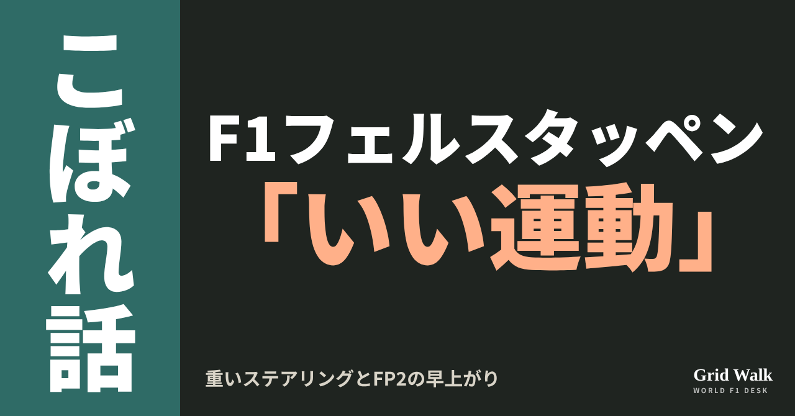<button class="cp dl" data-img="img/verstappen-steering-workout-20261107.png" data-name="verstappen-steering-workout-20261107_見出し画像.png">ダウンロード</button></li>
<li class="st"><div class="hd"><span class="no">2</span><b>タイトル</b></div><div class="bx" id="p1t">フェルスタッペン「エンジンと話さなきゃいけないの？」　3番手でも不満が続いた金曜</div><button class="cp" data-plain="p1t">タイトルをコピー</button></li>
<li class="st"><div class="hd"><span class="no">3</span><b>本文</b></div><div class="bx tall" id="p1r"><p>サンパウロGPの金曜、マックス・フェルスタッペンはFP1もFP2も3番手でした。それでも本人には不満がいくつもありました。重いステアリングを「workout」、つまり「いい運動」と呼び、FP2は終わる数分前に車を降りました。その理由の説明は、媒体によって違いました。</p><p>F1公式とドイツのMotorsport-Totalの元記事、ハートとの無線を扱った回へのリンクはサイトで → <a href="https://f1gridwalk.github.io/lens/verstappen-steering-workout-20261107/?utm_source=note&amp;utm_campaign=verstappen-steering-workout-20261107">https://f1gridwalk.github.io/lens/verstappen-steering-workout-20261107/?utm_source=note&amp;utm_campaign=verstappen-steering-workout-20261107</a></p><h2>ステアリングが「いい運動」に</h2><p>F1公式によると、フェルスタッペンはこの日も、今季たびたび出ているシフトダウンの問題に悩みました。さらにRB22のステアリングが重いと訴え、「workout」と表現しました。</p><p>ドイツのMotorsport-Totalは、FP1の終わりごろにパワーステアリングの問題が出て、本人いわく、かなりの「Workout」になったと伝えています。FP2で2〜4番手に並んだランド・ノリス、フェルスタッペン、ジョージ・ラッセルの差は0.020秒でした（F1公式）。</p><h2>FP2を早く降りた説明は2通り</h2><p>F1公式は、フェルスタッペンがステアリングのために、FP2を少し早く切り上げたと書いています。</p><p>一方、Motorsport-Totalは、技術的な問題はなかったと書き、レッドブルのレース戦略責任者、ハンナ・シュミッツの説明を伝えました。</p><blockquote><p>「ロングランのデータに、とにかく不規則なところがたくさん見つかって、これ以上走っても役に立たないと考えました」「必要なデータが取れなかったんです。何に注目して、夜のうちに何を変えたいかは、もう分かっていました。だから、すぐにそちらに移りました」（シュミッツ、Motorsport-Total／ドイツ）</p></blockquote><p>同誌によると、切り上げを言い出したのは本人で、グリッドでのスタート練習も見送りました。グリッドは急な上り坂で、今季のレッドブルはスタートがいつも良くはなかったため、同誌はこの判断を興味深いと見ています。</p><p>2つの説明のどちらが実際の理由か、決める材料はいまのところありません。</p><h2>「エンジンと話さなきゃいけないの？」</h2><p>FP2の無線です。Motorsport-Totalによると、この週末もジャンピエロ・ランビアーゼの代わりにレースエンジニアを務めるトム・ハートが、パワーユニットとギアボックスの連携について、シフトの動きはどうやら自分で調整されているようだと説明しました。意味がつかめなかったフェルスタッペンは、皮肉で返しました。</p><blockquote><p>「どういう意味？ 今度は自分でエンジンと話さなきゃいけないの？ 『おい、クラッチ、いまからシフトするぞ！ でないと罰を受けるぞ！』とでも言えばいいのかな」（フェルスタッペン、チーム無線。Motorsport-Total／ドイツ。同誌のドイツ語の記事から編集部が訳しました）</p></blockquote><p>エンジンへの皮肉は、前戦メキシコでもありました（STORY https://f1gridwalk.github.io/topics/verstappen-around-the-outside/ ）。アメリカGPでのハートとの無線は、OFF GRID https://f1gridwalk.github.io/lens/tom-hart-debut-20261026/ で。</p><h2>チームは「かなりの数の変更」</h2><p>ステアリングの問題は解決したのかと聞かれ、シュミッツはこう答えています。</p><blockquote><p>「残りの週末は、別のステアリングホイールを使うことになると思います。マックスの側では、かなりの数の変更を検討しています」「本人が不満に思っていることはいくつもありますが、それが何かはすべて分かっていますし、どれも取り組んで改善できることです」（シュミッツ、F1公式／イギリス）</p></blockquote><p><strong>FP2を降りた理由は、ステアリングか、ロングランのデータか。あなたはどちらの説明がしっくりきますか？</strong></p><p>━━━━━━━━━━</p><p><strong>F1 Grid Walk では、世界のF1ニュースを毎日日本語でまとめています。</strong></p><p>海外の記事の要約を、毎日載せています。</p><p><a href="https://f1gridwalk.github.io/">https://f1gridwalk.github.io/</a></p><p>ほかの海外記事も読みたい方は、F1 Grid Walkへ。</p><p><a href="https://f1gridwalk.github.io/lens/verstappen-steering-workout-20261107/">https://f1gridwalk.github.io/lens/verstappen-steering-workout-20261107/</a></p><p>━━━━━━━━━━</p><p><a href="https://www.formula1.com/en/latest/article/schmitz-confirms-red-bull-looking-into-quite-a-few-changes-following-verstappens-sao-paulo-issues.mt1q9B8dzsQIDHkp5YFUs">出典：Formula 1 公式（イギリス）</a></p><p><a href="https://www.motorsport-total.com/formel-1/news/red-bull-erklaert-warum-max-verstappen-das-freitagstraining-vorzeitig-beendet-hat-26110702">出典：Motorsport-Total.com（ドイツ）</a></p></div><button class="cp" data-rich="p1r">本文をコピー</button></li>
<li class="st"><div class="hd"><span class="no">4</span><b>ハッシュタグ</b></div><div class="bx" id="p1h">#F1 #F1jp #フェルスタッペン #レッドブル #ハンナシュミッツ #トムハート #サンパウロGP #インテルラゴス #F1こぼれ話 #OFFGRID</div><button class="cp" data-plain="p1h">タグをコピー</button></li>
</ol><h3 class="xh">X</h3><ol class="steps">
<li class="st im"><div class="hd"><b>X用の画像</b><em>画像</em></div>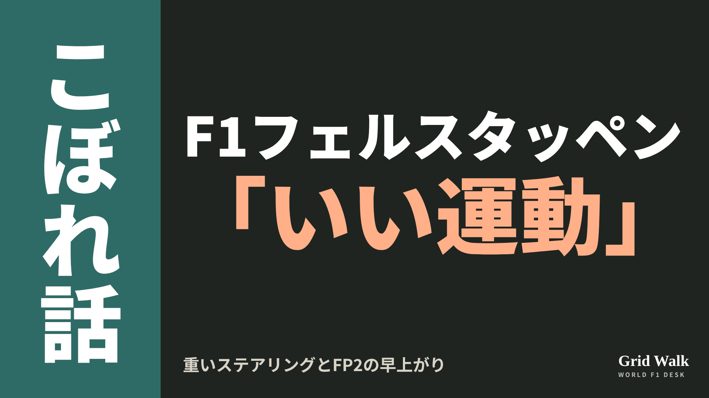<button class="cp dl" data-img="img/x_verstappen-steering-workout-20261107.png" data-name="x_verstappen-steering-workout-20261107.png">ダウンロード</button></li>
<li class="st"><div class="hd"><b>① noteをシェアするときの文</b></div><div class="bx" id="p1x0">FP1・FP2とも3番手でも、フェルスタッペンは重いステアリングを「workout（いい運動）」と呼び、FP2は数分早く車を降りました。その説明は、F1公式とドイツ誌で違っていました。noteにまとめました #F1jp #フェルスタッペン</div><button class="cp" data-plain="p1x0">コピー</button></li>
<li class="st"><div class="hd"><b>② ①への返信</b></div><div class="bx" id="p1x1">ほかの海外記事も読みたい方は、F1 Grid Walkへ。
https://f1gridwalk.github.io/lens/verstappen-steering-workout-20261107/?utm_source=x&amp;utm_campaign=verstappen-steering-workout-20261107</div><button class="cp" data-plain="p1x1">コピー</button></li>
<li class="st"><div class="hd"><b>③ ②への返信</b></div><div class="bx" id="p1x2">毎日の海外F1ニュースは、日本語でこちらにまとめています。
https://f1gridwalk.github.io/</div><button class="cp" data-plain="p1x2">コピー</button></li>
</ol></section><section class="part" id="p2"><h2><span class="tag">OFF GRID</span>41歳ハミルトン、若手の「本物の謙虚さと品位」をたたえる　400戦目を前に</h2><p class="sub">サイトに公開：19:40</p><ol class="steps">
<li class="st im"><div class="hd"><span class="no">1</span><b>見出し画像</b><em>画像</em></div>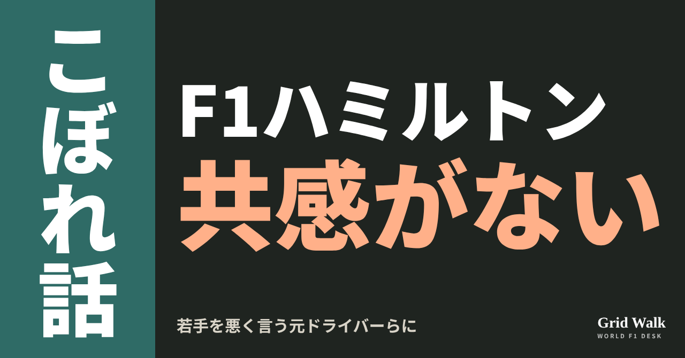<button class="cp dl" data-img="img/hamilton-young-drivers-respect-20261107.png" data-name="hamilton-young-drivers-respect-20261107_見出し画像.png">ダウンロード</button></li>
<li class="st"><div class="hd"><span class="no">2</span><b>タイトル</b></div><div class="bx" id="p2t">41歳ハミルトン、若手の「本物の謙虚さと品位」をたたえる　400戦目を前に</div><button class="cp" data-plain="p2t">タイトルをコピー</button></li>
<li class="st"><div class="hd"><span class="no">3</span><b>本文</b></div><div class="bx tall" id="p2r"><p>20歳のアンドレア・キミ・アントネッリが、史上最年少で王者になった次の週末（https://f1gridwalk.github.io/topics/antonelli-champion-of-the-world/ ）。41歳のルイス・ハミルトン（フェラーリ）が、若いドライバーについてこう話したと、ドイツのMotorsport-Totalが11月7日に伝えました。</p><p>元の記事と、1年前のブラジルでの発言の記事へのリンクはサイトで → <a href="https://f1gridwalk.github.io/lens/hamilton-young-drivers-respect-20261107/?utm_source=note&amp;utm_campaign=hamilton-young-drivers-respect-20261107">https://f1gridwalk.github.io/lens/hamilton-young-drivers-respect-20261107/?utm_source=note&amp;utm_campaign=hamilton-young-drivers-respect-20261107</a></p><blockquote><p>「元F1ドライバーや、年上のドライバー、レーサーたちが、いつも若い人たちのことを悪く言っているのを、よく見ます」（ハミルトン、Motorsport-Total／ドイツ）</p></blockquote><h2>「共感がまったくない」</h2><p>Motorsport-Totalによると、ハミルトンは、若い世代が育っていくのを見ても、それを自分のキャリアを振り返るきっかけにはしていないそうです。続けて、こう話しました。</p><blockquote><p>「自分たちも似たようなことを経験してきたのに、共感がまったくない。自分は絶対にそういうタイプのドライバーにならないようにしたいと、ずっと思ってきました」（同）</p></blockquote><p>その代わりに、若いドライバーが成し遂げたことを認めて、ふさわしい敬意を払うことを大事にしている、と同紙は伝えています。ハミルトンは、だれのことかは言っていません。</p><p>同紙は、この話をアントネッリの初タイトルと結びつけ、見出しに「verbittert（苦々しい思いにとらわれた、という意味）」という言葉を使いました。ただ、これは見出しの言葉で、記事の中のハミルトンの発言には出てきません。アメリカのbeIN SPORTSも、サンパウロGPを前に記者に話した内容として、同じ趣旨を言い換えで伝えています。</p><h2>後ろのチームの若手も</h2><p>ハミルトンが見ているのは、前を走る若手だけではないそうです。</p><blockquote><p>「若いドライバーたちをたくさん見られるのは、すばらしいことです。グリッドのもっと後ろの、ほかのチームでも」「みんな、毎週毎週、困難と重圧に向き合っている」（ハミルトン、Motorsport-Total／ドイツ）</p></blockquote><p>つまずいても立ち上がり、顔を上げて走り続けるのは、決して当たり前のことではない、とも話したといいます。</p><blockquote><p>「みんな、本物の謙虚さと品位をもって、それをやっています」「もちろん、その途中で失敗もします。でも、ここはモータースポーツの最高峰です。うまくやるのがいちばん難しい舞台です」（同）</p></blockquote><blockquote><p>「何度も立ち上がって、続けて、すべてを出し切るのが、一人ひとりにとってどういうことか、僕には分かります。だから、とても尊敬しています」（同）</p></blockquote><h2>1年前のブラジルでは</h2><p>年上のドライバーの若手批判に、ハミルトンが触れたのは初めてではありません。イギリスのCrash.netによると、1年前、2025年のブラジルでも、こう話していました。</p><blockquote><p>「年上の人たち、年上のドライバーたちから、否定的なことがたくさん聞こえてくる。たいていは、それほど多くを成し遂げてもいない人たちから」（ハミルトン、2025年、Crash.net／イギリス）</p></blockquote><p>編集部としては、1年前は相手の実績を問う言い方だったのに対し、今回は、自分がどういう先輩でいたいかを語る形になっていると見ています。</p><p>F1公式の記録では、ハミルトンのグランプリ出場はここまで399回。日曜のサンパウロGPが400戦目です。2008年に、1点差で初めての王座を決めたインテルラゴスでもあります（F1公式、GPblog／オランダ）。</p><p><strong>若いドライバーへの厳しい声。経験者だからこその助言だと思いますか、それとも共感が足りないと思いますか？</strong></p><p>━━━━━━━━━━</p><p><strong>F1 Grid Walk では、世界のF1ニュースを毎日日本語でまとめています。</strong></p><p>海外の記事の要約を、毎日載せています。</p><p><a href="https://f1gridwalk.github.io/">https://f1gridwalk.github.io/</a></p><p>ほかの海外記事も読みたい方は、F1 Grid Walkへ。</p><p><a href="https://f1gridwalk.github.io/lens/hamilton-young-drivers-respect-20261107/">https://f1gridwalk.github.io/lens/hamilton-young-drivers-respect-20261107/</a></p><p>━━━━━━━━━━</p><p><a href="https://www.motorsport-total.com/formel-1/news/lewis-hamilton-wollte-nie-so-verbittert-werden-wie-die-anderen-alten-fahrer-26110703">出典：Motorsport-Total.com（ドイツ）</a></p><p><a href="https://www.beinsports.com/en-us/motorsports/motorsports-formula-1/articles/lewis-hamilton-still-feels-young-despite-reaching-400-f1-races-this-weekend-2026-11-05">出典：beIN SPORTS（アメリカ）</a></p><p><a href="https://www.crash.net/f1/news/1086424/1/lewis-hamilton-blasts-older-guys-who-didnt-achieve-much-fresh-criticism">出典：Crash.net（イギリス）</a></p><p><a href="https://www.formula1.com/en/drivers/lewis-hamilton">出典：F1公式（イギリス）</a></p><p><a href="https://www.formula1.com/en/results/2008/drivers">出典：F1公式（イギリス）</a></p><p><a href="https://www.gpblog.com/en/news/hamilton-targets-victory-in-400th-grand-prix-at-the-track-where-he-won-his-first-title">出典：GPblog（オランダ）</a></p></div><button class="cp" data-rich="p2r">本文をコピー</button></li>
<li class="st"><div class="hd"><span class="no">4</span><b>ハッシュタグ</b></div><div class="bx" id="p2h">#F1 #F1jp #ハミルトン #アントネッリ #フェラーリ #サンパウロGP #F1こぼれ話 #OFFGRID</div><button class="cp" data-plain="p2h">タグをコピー</button></li>
</ol><h3 class="xh">X</h3><ol class="steps">
<li class="st im"><div class="hd"><b>X用の画像</b><em>画像</em></div>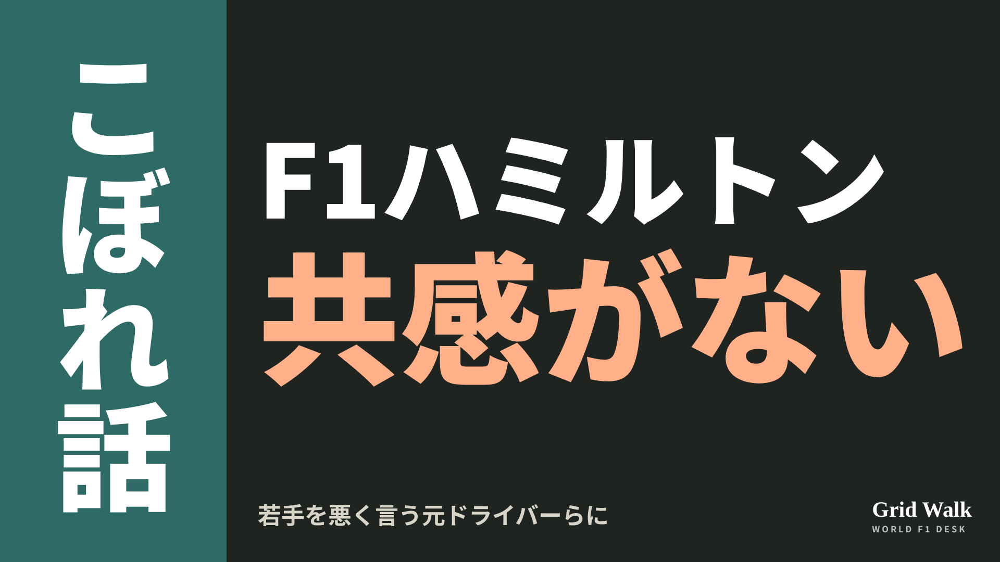<button class="cp dl" data-img="img/x_hamilton-young-drivers-respect-20261107.png" data-name="x_hamilton-young-drivers-respect-20261107.png">ダウンロード</button></li>
<li class="st"><div class="hd"><b>① noteをシェアするときの文</b></div><div class="bx" id="p2x0">20歳の王者が生まれた次の週末、41歳のハミルトンは、若いドライバーを悪く言う元ドライバーたちについて話しました。若手には「本物の謙虚さと品位」がある、と。noteにまとめました #F1jp #ハミルトン</div><button class="cp" data-plain="p2x0">コピー</button></li>
<li class="st"><div class="hd"><b>② ①への返信</b></div><div class="bx" id="p2x1">ほかの海外記事も読みたい方は、F1 Grid Walkへ。
https://f1gridwalk.github.io/lens/hamilton-young-drivers-respect-20261107/?utm_source=x&amp;utm_campaign=hamilton-young-drivers-respect-20261107</div><button class="cp" data-plain="p2x1">コピー</button></li>
<li class="st"><div class="hd"><b>③ ②への返信</b></div><div class="bx" id="p2x2">毎日の海外F1ニュースは、日本語でこちらにまとめています。
https://f1gridwalk.github.io/</div><button class="cp" data-plain="p2x2">コピー</button></li>
</ol></section><section class="part" id="p3"><h2><span class="tag">WORLD GRID</span>フェラーリの金曜の遅れ、各国はどう測った？　補正の平均か、同じタイヤか</h2><p class="sub">サイトに公開：19:40</p><ol class="steps">
<li class="st im"><div class="hd"><span class="no">1</span><b>見出し画像</b><em>画像</em></div>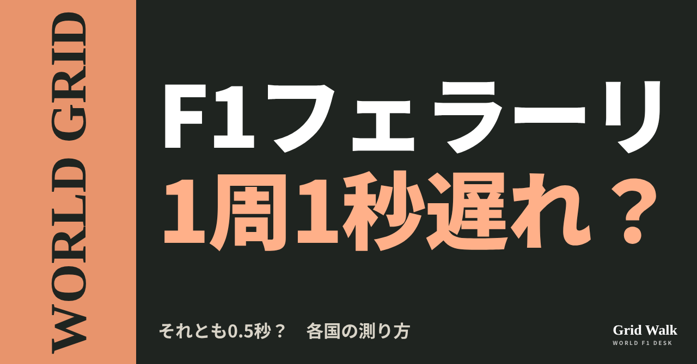<button class="cp dl" data-img="img/ferrari-longrun-gap-20261107.png" data-name="ferrari-longrun-gap-20261107_見出し画像.png">ダウンロード</button></li>
<li class="st"><div class="hd"><span class="no">2</span><b>タイトル</b></div><div class="bx" id="p3t">フェラーリの金曜の遅れ、各国はどう測った？　補正の平均か、同じタイヤか</div><button class="cp" data-plain="p3t">タイトルをコピー</button></li>
<li class="st"><div class="hd"><span class="no">3</span><b>本文</b></div><div class="bx tall" id="p3r"><p>同じ金曜、同じフェラーリのロングラン（決勝を想定した連続走行）なのに、伝えられた差はほぼ倍違いました。ルクレールとトップのアントネッリの差を、ドイツのMotorsport-Totalは1周あたり1.072秒、イタリアのmotorsport.comはおよそ0.5秒としています。各国の書き方を、数字の出し方から並べます。</p><p>1秒と0.5秒、各国の数字の出し方と元の記事へのリンクはサイトで → <a href="https://f1gridwalk.github.io/lens/ferrari-longrun-gap-20261107/?utm_source=note&amp;utm_campaign=ferrari-longrun-gap-20261107">https://f1gridwalk.github.io/lens/ferrari-longrun-gap-20261107/?utm_source=note&amp;utm_campaign=ferrari-longrun-gap-20261107</a></p><h2>ドイツは「補正」して1秒</h2><p>Motorsport-Totalの見出しは「フェラーリは大失態」。タイヤと周回数の違いを補正した平均で、最速はアンドレア・キミ・アントネッリ（メルセデス）。ジョージ・ラッセルが0.311秒差、マックス・フェルスタッペン（レッドブル）が0.474秒差で、シャルル・ルクレールは1.072秒、ルイス・ハミルトンは1.090秒の遅れでした。曲がりの多い2つ目のセクターで大きく遅れ、ストレートの速さが効く3つ目では、ところどころアストンマーティン並みだったといいます。</p><h2>イタリアは0.5秒と、補正なしの平均</h2><p>motorsport.comイタリア版のロベルト・キンケーロ記者の見出しは「急な目覚め」。ソフト同士でルクレールとアントネッリを比べ、差は1周およそ0.5秒。ミディアム同士のハミルトンとフェルスタッペンにも同じくらいの差があったとしています。F1GrandPrix.it（Motorionline）は2人の平均タイムをそのまま示し、ソフトのルクレールが1分16秒177（遅い1周を除く）、ミディアムからソフトにつないだハミルトンが1分16秒143でした。</p><p>同じルクレールとアントネッリの差でも、補正するか、同じタイヤで比べるかで数字は変わります。Motorsport-Total自身も、摩耗の大きいブラジルでは数周の違いで平均が変わると断り、F1GrandPrix.itも金曜のデータは慎重に読むべきだとしています。</p><h2>バスール「ドラマではない」</h2><blockquote><p>「周回の中で、エネルギーの出し方に何度か問題がありました。（中略）彼の最速ラップでは、ストレートでコンマ数秒を失いました。ドラマではない、と言えます」（フレデリック・バスール代表、Motorsport-Total／ドイツ）</p></blockquote><blockquote><p>「バランスはよくなかった。すばらしくはなかった。路面は、1週間前とまったく正反対だと思います」（同）</p></blockquote><p>記事によると、バスール代表は、車の基本の感触がまだ思うところにないことのほうが大事だと見ています。ルクレールはF1公式にこう話しました。</p><blockquote><p>「FP2はとても難しかった。今年、車の中で感じた中でも最悪の部類です」「取り組むことはたくさんあります」「車はかなり大きく変えると思います」（ルクレール、F1公式／イギリス）</p></blockquote><p>ハミルトンはSky Sportsに「路面がとてもバンピーで滑りやすく、タイヤを正しい温度の幅に入れるのが難しかった」と話しています。</p><h2>見出しの温度は国で違った</h2><p>イタリアのFormula1.itの見出しは「ルクレール、フェラーリをおびえさせる」。Corriere dello Sportは「期待外れ」と書き、技術的な理由には触れずに、ハミルトンとルクレールの論争で「まだ揺れている」チームだと書き添えました。スペインのmotorsport.comの見出しは「ルクレール、フェラーリで警報を鳴らす」。イギリスのThe Raceは金曜の「負け組」にフェラーリを挙げ、金曜のタイム表で今季初めてトップ5を外れたと指摘しました。</p><p>ブラジルのGrande PrêmioとAutoracingは、ハミルトンとの件は「すべて解決した」というルクレールの言葉を見出しに置き、車の話は本文で伝えています。2人の対立はコラム（https://f1gridwalk.github.io/lens/hamilton-leclerc-rift-20261107/ ）で紹介しました。</p><p>メルセデスの見方は少し違います。Motorsport-Totalによると、ブラッドリー・ロード副代表は、フェラーリはいま半歩後ろだが、土曜の暖かい条件では上がってくると見ています。メルセデスは、このレースでフェラーリより3点以上多く取れば、チームの王座が決まります（Motorsport-Total、https://f1gridwalk.github.io/news/de-motorsporttotal-mercedes-constructors-brazil/ ）。</p><p>編集部としては、1秒と0.5秒は同じ走りの別の切り取り方で、遅れの場所を書いた記事では、コーナーとバランスの話が目立ったと見ています。「ドラマではない」は、エネルギーの出し方についての言葉でした。</p><p><strong>金曜のロングランの数字。あなたは、どこまで当てにしますか？</strong></p><p>━━━━━━━━━━</p><p><strong>F1 Grid Walk では、世界のF1ニュースを毎日日本語でまとめています。</strong></p><p>海外の記事の要約を、毎日載せています。</p><p><a href="https://f1gridwalk.github.io/">https://f1gridwalk.github.io/</a></p><p>ほかの海外記事も読みたい方は、F1 Grid Walkへ。</p><p><a href="https://f1gridwalk.github.io/lens/ferrari-longrun-gap-20261107/">https://f1gridwalk.github.io/lens/ferrari-longrun-gap-20261107/</a></p><p>━━━━━━━━━━</p><p><a href="https://www.motorsport-total.com/formel-1/news/longruns-brasilien-antonelli-dominiert-ferrari-erlebt-debakel-26110623">出典：Motorsport-Total.com（ドイツ）</a></p><p><a href="https://it.motorsport.com/f1/news/f1-ferrari-interlagos-e-un-brusco-risveglio-mezzo-secondo-da-recuperare-sul-passo-gara/10872423/">出典：motorsport.com（イタリア版）（イタリア）</a></p><p><a href="https://f1grandprix.motorionline.com/ferrari-interlagos-venerdi-hamilton-leclerc-beganovic-fp2/">出典：F1GrandPrix.it（Motorionline）（イタリア）</a></p><p><a href="https://www.formula1.it/news/33794/1/leclerc-spaventa-la-ferrari-mai-cosi-male-nelle-curve-non-solo-sul-dritto">出典：Formula1.it（イタリア）</a></p><p><a href="https://www.corrieredellosport.it/news/formula-1/2026/11/06-152426686/gp_del_brasile_antonelli_domina_le_seconde_libere_indietro_le_ferrari">出典：Corriere dello Sport（イタリア）</a></p><p><a href="https://www.formula1.com/en/latest/article/leclerc-concedes-theres-plenty-to-work-on-for-ferrari-ahead-of-sao-paulo-gp.2cWYwXJTouoM7r1LMyyhKr">出典：F1公式（イギリス）</a></p><p><a href="https://es.motorsport.com/f1/news/leclerc-declaraciones-viernes-brasil-2026/10872336/">出典：motorsport.com（スペイン語版）（スペイン）</a></p><p><a href="https://www.skysports.com/f1/news/13609099/sao-paulo-gp-charles-leclerc-plans-significant-ferrari-car-changes-as-lewis-hamilton-rues-difficult-brazil-practice">出典：Sky Sports（イギリス）</a></p><p><a href="https://www.the-race.com/formula-1/winners-losers-from-f1-2026-brazilian-gp-friday-practice/">出典：The Race（イギリス）</a></p><p><a href="https://grandepremio.com/br/f1/leclerc-garante-que-esta-tudo-resolvido-com-hamilton-apos-puxao-de-orelha-da-ferrari/">出典：Grande Prêmio（ブラジル）</a></p><p><a href="https://www.autoracing.com.br/leclerc-encerra-polemica-hamilton-ferrari/">出典：Autoracing（ブラジル）</a></p><p><a href="https://www.motorsport-total.com/formel-1/news/naechster-titel-so-wird-mercedes-in-brasilien-konstrukteurs-weltmeister-26110410">出典：Motorsport-Total.com（ドイツ）</a></p></div><button class="cp" data-rich="p3r">本文をコピー</button></li>
<li class="st"><div class="hd"><span class="no">4</span><b>ハッシュタグ</b></div><div class="bx" id="p3h">#F1 #F1jp #フェラーリ #ルクレール #ハミルトン #サンパウロGP #インテルラゴス #ロングラン #WORLDGRID #F1ニュース</div><button class="cp" data-plain="p3h">タグをコピー</button></li>
</ol><h3 class="xh">X</h3><ol class="steps">
<li class="st im"><div class="hd"><b>X用の画像</b><em>画像</em></div>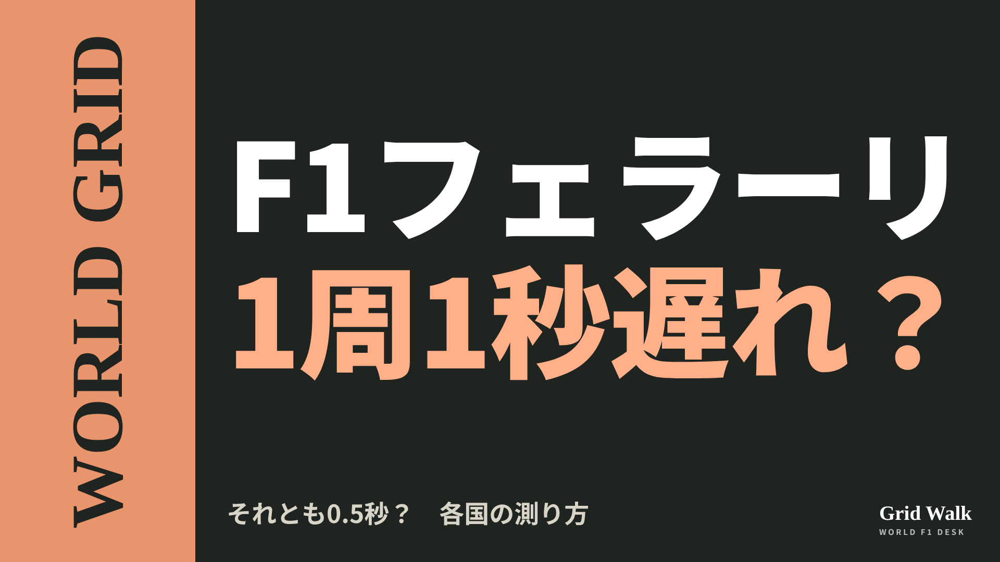<button class="cp dl" data-img="img/x_ferrari-longrun-gap-20261107.png" data-name="x_ferrari-longrun-gap-20261107.png">ダウンロード</button></li>
<li class="st"><div class="hd"><b>① noteをシェアするときの文</b></div><div class="bx" id="p3x0">サンパウロGPの金曜、ルクレールのロングランの遅れは、ドイツの媒体では1周1.072秒、イタリアの媒体ではおよそ0.5秒。比べ方で数字が変わります。各国の見出しもnoteに並べました #F1jp #フェラーリ</div><button class="cp" data-plain="p3x0">コピー</button></li>
<li class="st"><div class="hd"><b>② ①への返信</b></div><div class="bx" id="p3x1">ほかの海外記事も読みたい方は、F1 Grid Walkへ。
https://f1gridwalk.github.io/lens/ferrari-longrun-gap-20261107/?utm_source=x&amp;utm_campaign=ferrari-longrun-gap-20261107</div><button class="cp" data-plain="p3x1">コピー</button></li>
<li class="st"><div class="hd"><b>③ ②への返信</b></div><div class="bx" id="p3x2">毎日の海外F1ニュースは、日本語でこちらにまとめています。
https://f1gridwalk.github.io/</div><button class="cp" data-plain="p3x2">コピー</button></li>
</ol></section><section class="part" id="p4"><h2><span class="tag">WORLD GRID</span>代表は「時間は味方」、ローソンは「ぼんやり」　レーシングブルズの2席</h2><p class="sub">サイトに公開：19:40</p><ol class="steps">
<li class="st im"><div class="hd"><span class="no">1</span><b>見出し画像</b><em>画像</em></div>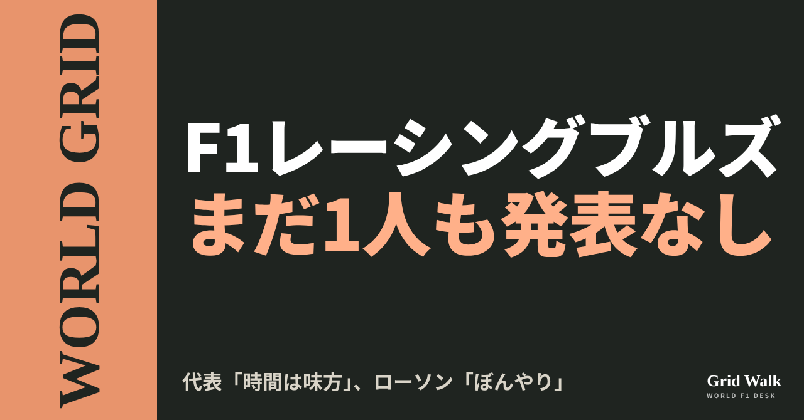<button class="cp dl" data-img="img/racing-bulls-seats-undecided-20261107.png" data-name="racing-bulls-seats-undecided-20261107_見出し画像.png">ダウンロード</button></li>
<li class="st"><div class="hd"><span class="no">2</span><b>タイトル</b></div><div class="bx" id="p4t">代表は「時間は味方」、ローソンは「ぼんやり」　レーシングブルズの2席</div><button class="cp" data-plain="p4t">タイトルをコピー</button></li>
<li class="st"><div class="hd"><span class="no">3</span><b>本文</b></div><div class="bx tall" id="p4r"><p>2027年のドライバーを、まだ1人も発表していないチームがあります。レーシングブルズです（F1公式）。2席に候補は3人。サンパウロGPの金曜、アラン・パーメイン代表は「少し科学を当てはめようとしている」「時間は味方です」と話しました。同じ週、リアム・ローソンは自分の先行きを「正直、かなりぼんやり」と言っています（The Race）。</p><p>各媒体の見出しの違いと、元の記事へのリンクはサイトで → <a href="https://f1gridwalk.github.io/lens/racing-bulls-seats-undecided-20261107/?utm_source=note&amp;utm_campaign=racing-bulls-seats-undecided-20261107">https://f1gridwalk.github.io/lens/racing-bulls-seats-undecided-20261107/?utm_source=note&amp;utm_campaign=racing-bulls-seats-undecided-20261107</a></p><h2>3人の今季</h2><p>ローソンはドライバーズランキング9位で、上位チームを除けばいちばん上です。今季はレッドブルでも3戦を走りました。新人のアービッド・リンドブラッドは45点差の11位ですが、グランプリで11回入賞しています。レッドブル育成のニコラ・ツォロフは、F2で優勝があり、1年目の今季はランキング2位につけています。メキシコのFP1でF1デビューし、リンドブラッドより0.1秒遅いだけでした（いずれもF1公式）。</p><p>The Raceによると、ローソンは83点。レッドブルにいた3戦の間の2人の得点を除くと、69対32でリンドブラッドを上回ります。</p><h2>代表「時間は味方です」</h2><p>パーメイン代表は、2031年までの契約延長を発表したばかりです。取材では、レッドブルの育成は「とても成功してきた」としたうえで、こう話しています。</p><blockquote><p>「批判するつもりはありませんが、皆さんは批判的ですよね。ドライバーが落ち着く時間を十分にもらえなかったり、早まった決断があったりしたのかもしれない、と」「私たちは少し科学を当てはめようとしていて、それには時間がかかります。すべてを見て、調べて、分析しています。時間は味方です」（アラン・パーメイン代表、F1公式）</p></blockquote><p>発表は「数週間のうちに」とし、「きっとみんな満足すると思います」と付け加えました。何を見て決めるのかについては、こう話しています。</p><blockquote><p>「主な要素は、いつものとおり、ペースと速さです」「私たちは若い才能を育てるためにいます」「それは必ずしも、ただ若手を次々と車に乗せ続けるという意味ではありません」「その才能を比べて測るために、経験もいくらか必要かもしれません」（アラン・パーメイン代表、F1公式）</p></blockquote><h2>ローソン「かなりぼんやり」</h2><p>チームがいつ先行きを伝えてくれそうかと聞かれ、ローソンは木曜にこう答えました。</p><blockquote><p>「正直、いまはかなりぼんやりしています」「いまのところ、手がかりはあまりありません」（ローソン、The Race／イギリス）</p></blockquote><p>メキシコGPのあとの11月2日には、オランダのRacingNews365が、ピーター・バイエルCEOの話を伝えていました。オーストリアのORFで、ローソンをほめたうえで、決めるのは代表だとしています。</p><blockquote><p>「彼は、自分を証明するためにできることを確かにすべてやりました」「新しいF1の才能を育てることで主導的な役割を担うチームとして、新しいドライバーを次々とこのシリーズに送り込むのが私たちの仕事です」「だから、最後に決めるのはアランだとも言っているんです」（ピーター・バイエルCEO、ORF／オーストリア、RacingNews365経由）</p></blockquote><h2>見出しはどこを見たか</h2><p>F1公式は代表の言葉「正しい決断が下される」を見出しにしました。The Raceは記事の頭に「レーシングブルズ代表は新契約。では、ローソンのは？」と掲げています。RacingNews365は「ローソンに『すべてやった』の称賛」と、CEOの言葉を前に出しています。</p><p>The Raceは論評として、レーシングブルズのスポーツ面での一番の役目は、いまも本家のための「ドライバーの仕上げの学校」だと書きました。フェルスタッペンとアイザック・ハジャーがレッドブルで決まっている今、本家のためを長い目で考えるなら、たとえ不当でも、ローソンが外れる道は見えてくる、という見方です。一方で、ローソンが残留にふさわしい力をこれまでで最もはっきり示している今季に、まったく保証がないのは「ばかげている」とも書きました。メキシコでのフェルスタッペンとの一件が響いている可能性にも触れています（https://f1gridwalk.github.io/lens/lawson-verstappen-underestimated-20261107/ ）。</p><p>編集部としては、代表の「必ずしも、ただ若手を次々と車に乗せ続けるという意味ではありません」と、その前のCEOの「新しいドライバーを次々とこのシリーズに送り込むのが私たちの仕事です」は、力点が少し違うと見ています。どちらに傾くのかは、まだ発表されていません（サイトの要約は https://f1gridwalk.github.io/news/en-f1com-permane-racing-bulls-decision/ ）。</p><p><strong>あなたなら、「経験」と「次の若手」、どちらを重く見ますか？</strong></p><p>━━━━━━━━━━</p><p><strong>F1 Grid Walk では、世界のF1ニュースを毎日日本語でまとめています。</strong></p><p>海外の記事の要約を、毎日載せています。</p><p><a href="https://f1gridwalk.github.io/">https://f1gridwalk.github.io/</a></p><p>ほかの海外記事も読みたい方は、F1 Grid Walkへ。</p><p><a href="https://f1gridwalk.github.io/lens/racing-bulls-seats-undecided-20261107/">https://f1gridwalk.github.io/lens/racing-bulls-seats-undecided-20261107/</a></p><p>━━━━━━━━━━</p><p><a href="https://www.formula1.com/en/latest/article/the-right-decision-will-be-made-permane-gives-update-on-driver-decision-process-at-racing-bulls.2kgfMJB54MrzV3I94KJHrG">出典：F1公式（イギリス）</a></p><p><a href="https://www.the-race.com/formula-1/whats-going-on-with-lawsons-blurry-f1-future/">出典：The Race（イギリス）</a></p><p><a href="https://racingnews365.com/liam-lawson-lands-done-everything-praise-as-f1-future-uncertainty-grows">出典：RacingNews365（オランダ）</a></p></div><button class="cp" data-rich="p4r">本文をコピー</button></li>
<li class="st"><div class="hd"><span class="no">4</span><b>ハッシュタグ</b></div><div class="bx" id="p4h">#F1 #F1jp #レーシングブルズ #ローソン #リンドブラッド #ツォロフ #サンパウロGP #F1移籍 #WORLDGRID</div><button class="cp" data-plain="p4h">タグをコピー</button></li>
</ol><h3 class="xh">X</h3><ol class="steps">
<li class="st im"><div class="hd"><b>X用の画像</b><em>画像</em></div>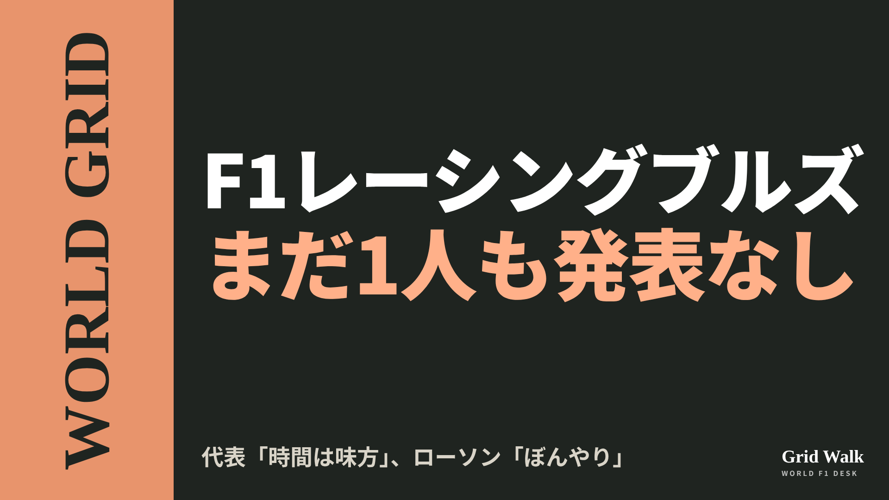<button class="cp dl" data-img="img/x_racing-bulls-seats-undecided-20261107.png" data-name="x_racing-bulls-seats-undecided-20261107.png">ダウンロード</button></li>
<li class="st"><div class="hd"><b>① noteをシェアするときの文</b></div><div class="bx" id="p4x0">2027年のドライバーを1人も発表していないのはレーシングブルズだけ。2席に候補は3人です。代表は「時間は味方」、ローソンは「正直、かなりぼんやり」。noteにまとめました #F1jp #ローソン</div><button class="cp" data-plain="p4x0">コピー</button></li>
<li class="st"><div class="hd"><b>② ①への返信</b></div><div class="bx" id="p4x1">ほかの海外記事も読みたい方は、F1 Grid Walkへ。
https://f1gridwalk.github.io/lens/racing-bulls-seats-undecided-20261107/?utm_source=x&amp;utm_campaign=racing-bulls-seats-undecided-20261107</div><button class="cp" data-plain="p4x1">コピー</button></li>
<li class="st"><div class="hd"><b>③ ②への返信</b></div><div class="bx" id="p4x2">毎日の海外F1ニュースは、日本語でこちらにまとめています。
https://f1gridwalk.github.io/</div><button class="cp" data-plain="p4x2">コピー</button></li>
</ol></section><section class="part" id="p5"><h2><span class="tag">OFF GRID</span>ADUOのエンジンを待たずに5グリッド降格　ラッセル、今季2度目</h2><p class="sub">サイトに公開：19:40</p><ol class="steps">
<li class="st im"><div class="hd"><span class="no">1</span><b>見出し画像</b><em>画像</em></div>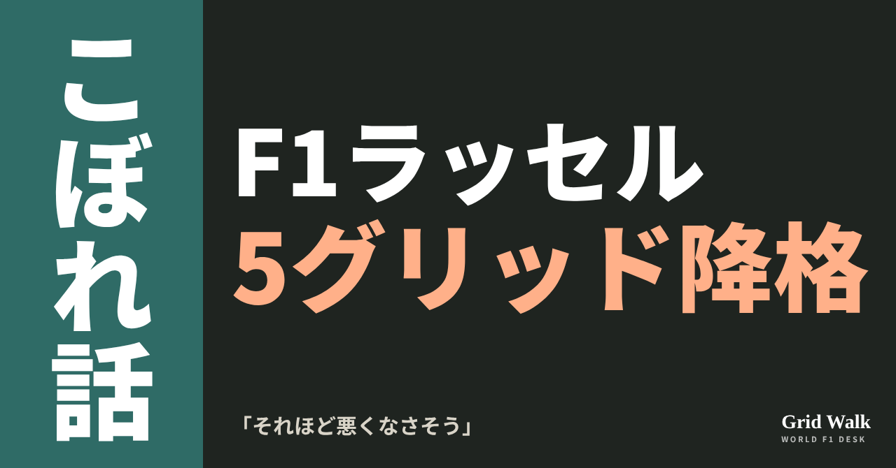<button class="cp dl" data-img="img/russell-engine-penalty-brazil-20261107.png" data-name="russell-engine-penalty-brazil-20261107_見出し画像.png">ダウンロード</button></li>
<li class="st"><div class="hd"><span class="no">2</span><b>タイトル</b></div><div class="bx" id="p5t">ADUOのエンジンを待たずに5グリッド降格　ラッセル、今季2度目</div><button class="cp" data-plain="p5t">タイトルをコピー</button></li>
<li class="st"><div class="hd"><span class="no">3</span><b>本文</b></div><div class="bx tall" id="p5r"><p>ジョージ・ラッセルは、サンパウロGPで新しい内燃機関（ICE）を入れ、5グリッド降格を受けます。4戦で2度目の降格です（英The Race）。受ける場所にブラジルを選んだ理由として、本人がメルセデスのInstagramで挙げたのは、2021年のルイス・ハミルトンでした。</p><p>2021年のハミルトンの勝ち方と、降格の仕組みを解いたDEEP GRIDへのリンクはサイトで → <a href="https://f1gridwalk.github.io/lens/russell-engine-penalty-brazil-20261107/?utm_source=note&amp;utm_campaign=russell-engine-penalty-brazil-20261107">https://f1gridwalk.github.io/lens/russell-engine-penalty-brazil-20261107/?utm_source=note&amp;utm_campaign=russell-engine-penalty-brazil-20261107</a></p><h2>「5グリッドなら、それほど悪くなさそう」</h2><blockquote><p>「シンガポールからシーズンの終わりまでのどこかで、グリッド降格はいずれ受けなければならなかった」「ここが受けるのにいい場所だと思った。ルイスは何年か前にここで大きなグリッド降格を受けて、かなりうまくやったからね」「5グリッドなら、それほど悪くなさそうだ。後ろから上がっていけるよう、やってみるよ」（ラッセル、メルセデスのInstagramでの発言／The Race・イギリス）</p></blockquote><p>先月のシンガポールでは、パワーユニット（PU）の部品をまとめて替え、合計60グリッドの降格でした。前の週にセパン（マレーシア）で開かれたバーレーンGPで、PUが壊れてリタイアしていたためです（The Race）。内訳は、5基目のICEなど4つの部品で40グリッド、予選のセッションで4つ目のエネルギーストア（ES）と制御電子機器（CE）の分が20グリッドです（FIAのスチュワードの決定）。ICEは1年に4基まで（F1公式）。FIAの技術代表の報告では、ラッセルはメキシコシティGPの時点でICEを5基使っていて、ブラジルの新しい1基も上限の外です。今回が5グリッドで済む理由は、DEEP GRIDの「グリッド降格はなぜ起きる？」（https://f1gridwalk.github.io/deep/grid-penalty-why/ ）と、ボッタスの50グリッドの回（https://f1gridwalk.github.io/deep/bottas-50-place-penalty/ ）にあります。</p><p>シンガポールのレースのあと、ラッセルは英Sky Sportsに、次はラスベガスあたりかもしれないと話していました（ロイター）。選んだのは、その1つ前のブラジルでした。</p><h2>2021年、ハミルトンは10番手から</h2><p>「何年か前」は2021年のことです。ハミルトンは金曜の予選でトップでしたが、リアウイングのDRS（当時の、直線で翼を開く仕組み。2026年の車にはありません）が、開いたときの規定（最大85ミリ）を満たさず失格。土曜のスプリントで最後尾から5位まで上がったものの、その週末に新しいICEを入れていたため5グリッド下がり、10番グリッドから決勝を勝ちました（F1公式）。当時は、スプリントの順位が決勝のスタート位置になりました（The Race）。この年をふくむインテルラゴスの荒れ方は、DEEP GRID（https://f1gridwalk.github.io/deep/interlagos-chaos/ ）にまとめています。</p><h2>待っていた新エンジンは、まだ</h2><p>この降格は、本来、メルセデスがADUOを使って改良した新しいエンジンを初めて入れるときに合わせるはずでした。ADUOは、エンジンで遅れたと判定されたメーカーに、FIAが追加の改良の機会を与える仕組みです（https://f1gridwalk.github.io/deep/aduo-explained/ ）。</p><p>The Raceによると、その新エンジンがいつ出るかは分からず、ブラジルのあと最大3戦のうちに出てくる保証もありません（最終2戦の扱いの話は、11月5日のコラム https://f1gridwalk.github.io/lens/finale-imola-standby-20261105/ ）。ドライバーズの王座はすでに決まり、コンストラクターズもほぼ手中にあるので、メルセデスは急がず、準備ができたと確信してから入れる、と書いています。The Raceの記事の要約は https://f1gridwalk.github.io/news/en-therace-russell-five-place-penalty/ にあります。</p><p>編集部としては、新しいエンジンの時期が見えなくなったことで、降格が、新しいエンジンに合わせて受けるものから、受ける場所を選んで受けるものに変わったのが、今回の決定の中身だと見ています。5年前に10番手から勝ったハミルトンは、いまはフェラーリで同じグリッドに並びます。</p><p><strong>降格を受けるなら、新しいエンジンが来るまで待つか、追い上げやすそうなコースで先に受けるか。あなたならどちらを選びますか？</strong></p><p>━━━━━━━━━━</p><p><strong>F1 Grid Walk では、世界のF1ニュースを毎日日本語でまとめています。</strong></p><p>海外の記事の要約を、毎日載せています。</p><p><a href="https://f1gridwalk.github.io/">https://f1gridwalk.github.io/</a></p><p>ほかの海外記事も読みたい方は、F1 Grid Walkへ。</p><p><a href="https://f1gridwalk.github.io/lens/russell-engine-penalty-brazil-20261107/">https://f1gridwalk.github.io/lens/russell-engine-penalty-brazil-20261107/</a></p><p>━━━━━━━━━━</p><p><a href="https://www.the-race.com/formula-1/russell-serving-another-f1-engine-grid-penalty-in-brazil/">出典：The Race（イギリス）</a></p><p><a href="https://www.fia.com/system/files/decision-document/2026_singapore_grand_prix_-_infringement_-_car_63_-_changes_to_pu_elements.pdf">出典：FIA（フランス）</a></p><p><a href="https://www.fia.com/system/files/decision-document/2026_singapore_grand_prix_-_infringement_-_car_63_-_additional_changes_to_pu_elements.pdf">出典：FIA（フランス）</a></p><p><a href="https://www.fia.com/system/files/decision-document/2026_mexico_city_grand_prix_-_pu_elements_used_per_driver_up_to_now.pdf">出典：FIA（フランス）</a></p><p><a href="https://www.thestar.com.my/sport/motorsport/2026/10/12/motor-racing-russell-could-take-next-engine-penalty-in-las-vegas">出典：Reuters（The Star）（イギリス）</a></p><p><a href="https://www.formula1.com/en/latest/article/how-many-power-unit-components-has-each-driver-used-in-2026-so-far.6DLZYWn0uEpsB0409mFRTF">出典：F1公式サイト（イギリス）</a></p><p><a href="https://www.formula1.com/en/latest/article/breaking-hamilton-at-risk-of-penalty-over-drs-technical-infringement-in.2pDHh4Fu8pktfpdSrj6LDQ">出典：F1公式サイト（イギリス）</a></p><p><a href="https://www.formula1.com/en/latest/article/hamilton-takes-victory-in-brazil-after-stunning-drive-from-p10-and-pass-on.6svQJahOZ1FjwZHX0Zm3Bx">出典：F1公式サイト（イギリス）</a></p></div><button class="cp" data-rich="p5r">本文をコピー</button></li>
<li class="st"><div class="hd"><span class="no">4</span><b>ハッシュタグ</b></div><div class="bx" id="p5h">#F1 #F1jp #ラッセル #メルセデス #ハミルトン #サンパウロGP #インテルラゴス #グリッド降格 #F1こぼれ話 #OFFGRID</div><button class="cp" data-plain="p5h">タグをコピー</button></li>
</ol><h3 class="xh">X</h3><ol class="steps">
<li class="st im"><div class="hd"><b>X用の画像</b><em>画像</em></div>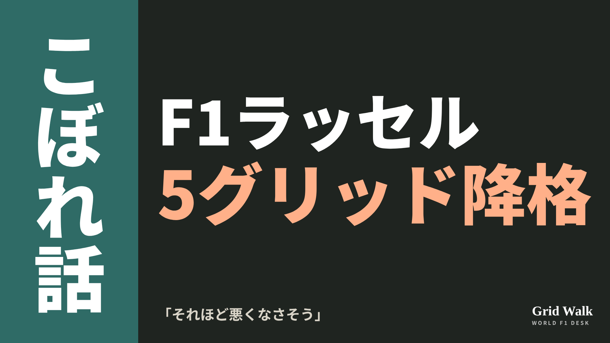<button class="cp dl" data-img="img/x_russell-engine-penalty-brazil-20261107.png" data-name="x_russell-engine-penalty-brazil-20261107.png">ダウンロード</button></li>
<li class="st"><div class="hd"><b>① noteをシェアするときの文</b></div><div class="bx" id="p5x0">ラッセルは新しいICEを入れて、サンパウロGPで5グリッド降格。4戦で2度目です。ブラジルを選んだ理由に、2021年に10番手から勝ったハミルトンを挙げました。noteにまとめました #F1jp #ラッセル</div><button class="cp" data-plain="p5x0">コピー</button></li>
<li class="st"><div class="hd"><b>② ①への返信</b></div><div class="bx" id="p5x1">ほかの海外記事も読みたい方は、F1 Grid Walkへ。
https://f1gridwalk.github.io/lens/russell-engine-penalty-brazil-20261107/?utm_source=x&amp;utm_campaign=russell-engine-penalty-brazil-20261107</div><button class="cp" data-plain="p5x1">コピー</button></li>
<li class="st"><div class="hd"><b>③ ②への返信</b></div><div class="bx" id="p5x2">毎日の海外F1ニュースは、日本語でこちらにまとめています。
https://f1gridwalk.github.io/</div><button class="cp" data-plain="p5x2">コピー</button></li>
</ol></section><section class="part" id="p6"><h2><span class="tag">OFF GRID</span>「明らかに危険」で戒告、でも「見事だった」　カマラのF1初日</h2><p class="sub">サイトに公開：19:40</p><ol class="steps">
<li class="st im"><div class="hd"><span class="no">1</span><b>見出し画像</b><em>画像</em></div>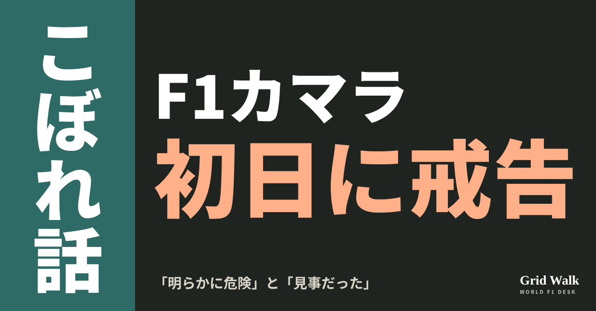<button class="cp dl" data-img="img/camara-reprimand-leclerc-20261107.png" data-name="camara-reprimand-leclerc-20261107_見出し画像.png">ダウンロード</button></li>
<li class="st"><div class="hd"><span class="no">2</span><b>タイトル</b></div><div class="bx" id="p6t">「明らかに危険」で戒告、でも「見事だった」　カマラのF1初日</div><button class="cp" data-plain="p6t">タイトルをコピー</button></li>
<li class="st"><div class="hd"><span class="no">3</span><b>本文</b></div><div class="bx tall" id="p6r"><p>地元でF1デビューの金曜を走った、ハースのラファエル・カマラ。FP2の途中、シャルル・ルクレールの前をふさいで、戒告を受けました。スチュワードの言葉は「明らかに危険」。ところが、同じ日をハースのエンジニアは「見事だった」と振り返っています。</p><p>元の記事と決定文書へのリンク、練習走行の妨害の扱いをまとめたDEEP GRIDへの案内はサイトで → <a href="https://f1gridwalk.github.io/lens/camara-reprimand-leclerc-20261107/?utm_source=note&amp;utm_campaign=camara-reprimand-leclerc-20261107">https://f1gridwalk.github.io/lens/camara-reprimand-leclerc-20261107/?utm_source=note&amp;utm_campaign=camara-reprimand-leclerc-20261107</a></p><p>順位は、FP1が18位、FP2が16位でした（今朝のコラム https://f1gridwalk.github.io/lens/camara-first-practice-20261107/ ）。こちらは、その金曜のもう一つの話です。</p><h2>15コーナー、上り坂で何があったか</h2><p>ブラジルのGrande Prêmio（英語版）によると、出来事はFP2の現地時間16時31分、メインストレートへ上っていく15コーナーです。イギリスのThe Raceによると、カマラはアタックの準備で車を左右に振りながらレーシングラインに入り、そこへ自分のラップを終えようとするルクレールが来ました。</p><p>FIAの決定文書（文書25）には、こうあります。</p><blockquote><p>「51号車は、16号車が速いラップで来ていると何度も知らされていた。それでも51号車は車を左右に振り、レーシングラインに大きく入り込んだ。16号車は衝突を避けるため右へよけなければならず、車のかなりの部分がコースの外に出た」（スチュワードの決定、RaceFans／イギリス）</p></blockquote><blockquote><p>「生まれた状況は明らかに危険で、51号車は16号車を妨げないよう、もっと注意すべきだった」（同）</p></blockquote><p>51号車がカマラ、16号車がルクレールです。イギリスのPlanetF1とイタリアのFanpage.itによると、ルクレールは無線で、汚い言葉まじりに「今のは何だったんだ」と声を上げました。2人はそろってスチュワードに呼ばれました（FIAの文書20・21）。</p><h2>「警告」ではなく「戒告」</h2><p>決定文書は「練習走行での走行妨害の通常の罰は警告だが、今回は戒告が妥当だと考える」としています（RaceFans）。グリッド降格はありません（Grande Prêmio）。練習走行の妨害のふだんの扱いは、DEEP GRID（ https://f1gridwalk.github.io/deep/stewards-how-investigations-start/ ）にまとめています。</p><p>Grande Prêmioによると、違反とされたのは競技規則B4.1.1（不必要な走行妨害）で、カマラには今季1回目の戒告です。FIAの競技規則（B1.9.5）では、同じシーズンに戒告を5回、うち4回以上を運転の違反で受けると、10グリッド降格になります。</p><p>カマラ本人は、ブラジルのグローボにこう話しています（Grande Prêmio）。</p><blockquote><p>「彼が横に行くと思って、通れるように開けたら、彼も僕と同じ側を選んだんです。でも、何が起きたのか、ちゃんと理解しないといけません」（カマラ、Grande Prêmio／ブラジル）</p></blockquote><blockquote><p>「大したことではないと思います。重大なことになり得たけれど、最後は全部うまくいきました」（同）</p></blockquote><h2>タイムは詰まり、ニッドは「見事だった」</h2><p>The Raceによると、チームメートのオリバー・ベアマンとの差は、FP1の0.86秒から、FP2では0.57秒に縮まりました。一方で、1コーナーへのブレーキングでは、両方のセッションで周を終わらせるほどの大きなロックアップがありました（ここで苦しんだドライバーはほかにもいました）。</p><p>ハースの車両エンジニアリングの責任者、ホーギー・ニッドはこう話します。</p><blockquote><p>「今日はもちろん、学ぶことがものすごく多かったし、かなり気おされる状況だ。でも彼は見事だった」「FP2では、ずっと良くなり続けた。かなりいい1日だったと思う」（ニッド、The Race／イギリス）</p></blockquote><p><strong>「明らかに危険」と「見事だった」。あなたは、カマラの金曜をどちらの言葉で覚えておきますか？</strong></p><p>━━━━━━━━━━</p><p><strong>F1 Grid Walk では、世界のF1ニュースを毎日日本語でまとめています。</strong></p><p>海外の記事の要約を、毎日載せています。</p><p><a href="https://f1gridwalk.github.io/">https://f1gridwalk.github.io/</a></p><p>ほかの海外記事も読みたい方は、F1 Grid Walkへ。</p><p><a href="https://f1gridwalk.github.io/lens/camara-reprimand-leclerc-20261107/">https://f1gridwalk.github.io/lens/camara-reprimand-leclerc-20261107/</a></p><p>━━━━━━━━━━</p><p><a href="https://www.the-race.com/formula-1/f1-debutant-camara-punished-for-dangerous-leclerc-impeding/">出典：The Race（イギリス）</a></p><p><a href="https://www.racefans.net/2026/11/06/camara-reprimanded-over-clearly-dangerous-incident-with-leclerc-in-practice/">出典：RaceFans（イギリス）</a></p><p><a href="https://grandepremio.com/en/f1/camara-reprimanded-for-impeding-leclerc-in-sao-paulo-gp-practice/">出典：Grande Prêmio（ブラジル）</a></p><p><a href="https://grandepremio.com/br/f1/camara-destaca-aprendizados-e-explica-incidente-com-leclerc-em-interlagos/">出典：Grande Prêmio（ブラジル）</a></p><p><a href="https://www.planetf1.com/news/fia-rafael-camara-charles-leclerc-penalty">出典：PlanetF1（イギリス）</a></p><p><a href="https://www.fanpage.it/sport/motori/che-c-o-era-quello-leclerc-rischia-il-botto-per-colpa-di-camara-in-brasile-se-la-cava-con-una-manovra-pericolosa/">出典：Fanpage.it（イタリア）</a></p><p><a href="https://www.fia.com/documents/event/S%C3%A3o%20Paulo%20Grand%20Prix">出典：FIA（国際）</a></p><p><a href="https://www.fia.com/system/files/documents/fia_2026_f1_regulations_-_section_b_sporting_-_iss_09_-_2026-10-01.pdf">出典：FIA（国際）</a></p></div><button class="cp" data-rich="p6r">本文をコピー</button></li>
<li class="st"><div class="hd"><span class="no">4</span><b>ハッシュタグ</b></div><div class="bx" id="p6h">#F1 #F1jp #カマラ #ハース #ルクレール #サンパウロGP #インテルラゴス #スチュワード #F1こぼれ話 #OFFGRID</div><button class="cp" data-plain="p6h">タグをコピー</button></li>
</ol><h3 class="xh">X</h3><ol class="steps">
<li class="st im"><div class="hd"><b>X用の画像</b><em>画像</em></div>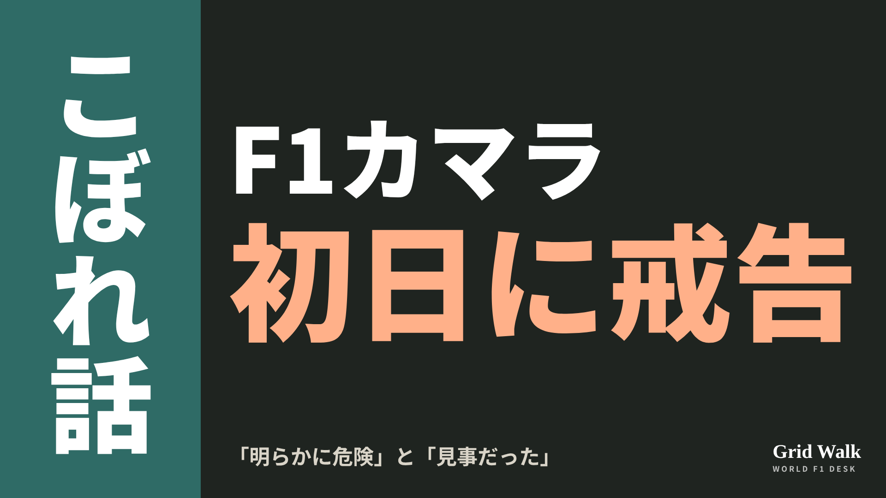<button class="cp dl" data-img="img/x_camara-reprimand-leclerc-20261107.png" data-name="x_camara-reprimand-leclerc-20261107.png">ダウンロード</button></li>
<li class="st"><div class="hd"><b>① noteをシェアするときの文</b></div><div class="bx" id="p6x0">地元でF1デビューしたカマラが、FP2でルクレールの前をふさいで戒告。スチュワードは「明らかに危険」、ハースのエンジニアは同じ日を「見事だった」と言いました。noteにまとめました #F1jp #カマラ</div><button class="cp" data-plain="p6x0">コピー</button></li>
<li class="st"><div class="hd"><b>② ①への返信</b></div><div class="bx" id="p6x1">ほかの海外記事も読みたい方は、F1 Grid Walkへ。
https://f1gridwalk.github.io/lens/camara-reprimand-leclerc-20261107/?utm_source=x&amp;utm_campaign=camara-reprimand-leclerc-20261107</div><button class="cp" data-plain="p6x1">コピー</button></li>
<li class="st"><div class="hd"><b>③ ②への返信</b></div><div class="bx" id="p6x2">毎日の海外F1ニュースは、日本語でこちらにまとめています。
https://f1gridwalk.github.io/</div><button class="cp" data-plain="p6x2">コピー</button></li>
</ol></section></main><script>
function done(b,msg){const t=b.dataset.t||b.textContent;b.dataset.t=t;b.classList.add('ok');b.textContent=msg||'コピーしました';setTimeout(()=>{b.classList.remove('ok');b.textContent=t},2000)}
function selectEl(el){const r=document.createRange();r.selectNodeContents(el);const s=getSelection();s.removeAllRanges();s.addRange(r)}
async function rich(el,b){
  try{await navigator.clipboard.write([new ClipboardItem({'text/html':new Blob([el.innerHTML],{type:'text/html'}),'text/plain':new Blob([el.innerText],{type:'text/plain'})})]);done(b);return}catch(e){}
  selectEl(el);let ok=false;try{ok=document.execCommand('copy')}catch(e){}
  if(ok){getSelection().removeAllRanges();done(b)}else{done(b,'選択しました。コピーしてください')}}
async function plain(el,b){
  try{await navigator.clipboard.writeText(el.innerText);done(b);return}catch(e){}
  selectEl(el);let ok=false;try{ok=document.execCommand('copy')}catch(e){}
  if(ok){getSelection().removeAllRanges();done(b)}else{done(b,'選択しました。コピーしてください')}}
let dlns=null;(async()=>{try{dlns=await window.claude?.use?.("downloads")}catch(e){dlns=null}})();
async function img(src,b){
  b.dataset.t=b.dataset.t||b.textContent;
  if(!dlns){try{dlns=await window.claude?.use?.("downloads")}catch(e){}}
  if(!dlns){b.textContent='ダウンロードできませんでした';setTimeout(()=>{b.textContent=b.dataset.t},3500);return}
  try{const blob=await fetch(src).then(r=>r.blob());b.textContent='保存の確認を開いています…';
    await dlns.save({filename:b.dataset.name,data:blob});done(b,'ダウンロードしました')}
  catch(e){const c=e&&e.code;b.textContent=c==='declined'?'キャンセルしました':c==='rate_limited'?'少し待ってからもう一度押してください':'ダウンロードできませんでした';setTimeout(()=>{b.textContent=b.dataset.t},3500)}}
document.querySelectorAll('.cp').forEach(b=>b.addEventListener('click',()=>{
  if(b.dataset.rich)rich(document.getElementById(b.dataset.rich),b);
  else if(b.dataset.plain)plain(document.getElementById(b.dataset.plain),b);
  else img(b.dataset.img,b)}));
</script>